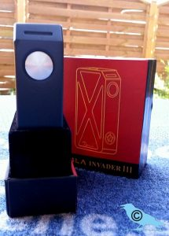
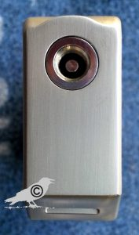
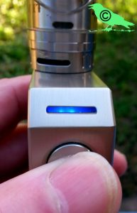
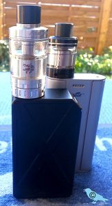
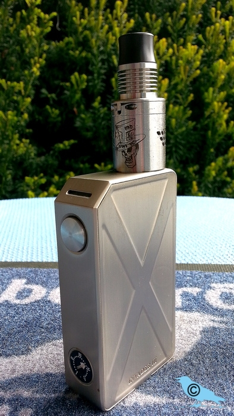

Eine Box ohne Schnick–Schnack: Die Tesla Invader 3
Üblicherweise wird sie in einem nach oben aufschiebbaren Karton geliefert. Darin befindet sich der Akkuträger an sich, ein Echtheitszertifikat und eine englischsprachige Bedienungsanleitung. Ein USB–Kabel liegt nicht bei, da die Tesla auch keine USB–Buchse zwecks Aufladung hat. Ist auch unnötig, da man “verheiratete Akkus” sowieso extern in einem geeigneten Ladegerät laden sollte. Die wenigsten Boxen verfügen über einen Balancer, der eine gleichmäßige Ladung beider Akkus gleichzeitig gewährleistet. Zu kaufen gibt es die Tesla in silber, schwarz matt und einem hellen metallic blau.
Beschreibung: Laut Hersteller hat sie eine Höhe von 90 mm, eine Länge von 50,5 mm und eine Breite von 23 mm. Darauf kommen wir später nochmal zurück. Betrieben wird sie mit einem verheirateten Pärchen 18650er Akkus, die seriell, also gestackt, angeordnet sind. Zum Herausnehmen der Akkus gibt es ein Textilband, das auch nötig ist. Verschlossen wird das Akkufach mit einem massiven Metalldeckel, der mit zwei Magneten versehen ist. Die halten wirklich gut, da gibt es kein Klappern.
Der Taster ist groß dimensioniert und mit einem leichten Widerstand angenehm zu betätigen. Leider klappern manche ein bisschen, persönlich stört mich das allerdings nicht. Oben drauf thront, mit einer leichten Abrundung nach vorne links und rechts versehen, der 510er Anschluss. Er schließt mit dem Gehäuse praktisch plan ab und besteht aus einem Edelstahlgewinde, einer ordentlichen Isolierung unten und einem versilberten Pluspol aus Messing. Er ist federnd gelagert und hat mit keinem meiner Verdampfer Probleme gehabt.
An der oben abgeschrägten Schmalseite sitzt unten das regelbare Potentiometer, das stufenlos zwischen Stufe 1 und Stufe 5 regelbar ist. Oben finden wir den Taster und in der Schräge ein blaues LED Licht. Dieses leuchtet bei Betrieb und bei eventuellen Störungsmeldungen. Es ist also durchaus eine Elektronik mit Chip verbaut, auch wenn die Tesla keinerlei andere Anzeige oder Display hat. Minimalismus pur…
Technik: Laut Hersteller können auf der Tesla Verdampfer ab einem Widerstand von 0,1 Ohm betrieben werden. Wenn man da das Potentiometer auf Stufe 5 stellt, gibt sie ihre höchste Leistung von 240 Watt ab. Theoretisch wäre wesentlich mehr Leistung möglich, aber da greift die Sicherheitsschaltung und riegelt bei 240 W ab. Eine durchaus sinnvolle Einrichtung, um den Strom akkuschonend unter 20 A pro Akku zu halten. Dazu kommen fünf weitere Sicherheitsschaltungen wie Kurzschlussschutz, Verpolungsschutz, Überspannung, zu heiß und zehn Sekunden Zugbegrenzung. Sollte da ein Fehler bestehen, blinkt die blaue LED und die Tesla feuert nicht. Die LED blinkt auch, wenn die Akkus leer sind. Dann kann man ebenfalls nicht mehr feuern. Man kann zwar die Leistung reduzieren und noch ein paar Züge machen, aber viel ist das nicht.
Das Potentiometer regelt von Stufe 1 und 3,6 Volt stufenlos bis zu Stufe 5 und 6,6 Volt. Dementsprechend steigert sich die Spannungsabgabe pro Stufe um 0,6 V. Die vier Punkte zwischen den verschiedenen Stufen entsprächen dann jeweils einer Steigerung um 0,15 V. Bei Stufe 2 plus 3 Punkte also zum Beispiel 4,65 V. Gemessen habe ich das nicht, da es eigentlich wenig erheblich ist.
Die Tesla wird im normalen Betrieb einfach nach dem Widerstand des aufgeschraubten Verdampfers und dem persönlichen Geschmack geregelt. Beginnen sollte man da niedrig und arbeitet sich nach oben, bis es dem eigenen Sweetspot entspricht. Von daher sind diese Stufen für mich nur Anhaltswerte. Das Potentiometer ist leicht versenkt im Gehäuse und kann einfach mit dem Fingernagel oder einem kleinen Schlitzschraubendreher verstellt werden. Selbst irgendwo in der Jackentasche oder im Rucksack verstellt sich da nichts. Zusätzlich sollte man die Tesla mit einem 5-fach Klick auf den Feuertaster komplett ausschalten.
Überraschend sind die Langlauffähigkeiten der Tesla z.B. im Vergleich zu meinem iStick 100W TC, auch wenn der eigentlich parallel betrieben wird. Die zwei Akkus im iStick sind bei mir nach etwa 6 Stunden Dauernutzung leer, während die Tesla, mit einem Pärchen und demselben Verdampfer, ohne Probleme doppelt so lange auskommt. Da zahlt es sich aus, dass die Tesla nur einen relativ einfachen Chip und keinerlei Display außer der kleinen LED hat. Da der Strom ohne große Umwege direkt an den Verdampfer weiter gegeben wird, kommt die Tesla auch mit Quadcoils und jeder Art von Verdampfer zurecht. Da kommt ein Mund–zu–Lunge Dampfer genauso zum Zuge, wie der Cloudchaser mit viel Metall im Tröpfler.
Design: Der „Kanister“ ist vom Design her bestimmt gewöhnungsbedürftig und wer auf akkurate Außenmaße steht, hat ebenfalls verloren. Mit einer gemessenen Höhe von 90,63mm, einer Länge von 50,71mm und einer Breite von 22,73mm ist meine schwarze Box so im Mittelfeld zwischen der silbernen und der blauen. Man könnte meinen, der Hersteller lässt jedes Gehäuse von Hand biegen, da keine zwei Boxen identisch sind. Der Feuertaster ist angenehm groß und kann ebenfalls unterschiedlich ausfallen. Mal etwas „klicky“, mal mit eindeutigem Druckpunkt. Zuverlässig ist er aber allemal.
Durch die Abschrägung oben ist die blaue LED–Leuchte selbst bei Benutzung gut zu sehen. Zusätzlich vereinfacht das auch das Aufsetzen des Akkudeckels, der durch den umgebenden Rahmen und zwei Magnete gehalten wird. Kann man also auch im Dunkeln ohne Verwechselungsprobleme schließen. Einfach bombenfest ohne Geklapper. Der Akkuwechsel geht dadurch schnell und einfach, wenn man beachtet, dass der Verdampfer beim Einlegen etwas gelockert werden muss.
Fazit: Die Tesla Invader V3 („Kanister“) ist eine einfache, sehr stabile Box für praktisch alle Anwendungen. Mit ihren zwei gestackten 18650–Akkus und einer maximalen Leistung von 240W bei 0,1 Ohm kann sie entweder treten wie ein Pferd, oder z.B. mit einem Flashi und gut über 1 Ohm als Dauerdampfe genutzt werden. Ihr großer Vorteil ist ihre Einfachheit und Robustheit. Keine Plastikteile, die brechen könnten, oder ein unzureichender Pluspol, bei dem nicht alle Verdampfer passen.

Die einzigen zwei Minuspunkte sind eine fehlende Akkuzustandsanzeige und das Problem, dass man den Akku unter dem 510er–Anschluss nur einlegen kann, wenn man vorher den Verdampfer lockert. Wer damit leben kann, hat eine sehr stabile Arbeitsdampfe, die selbst Stürze ohne Probleme übersteht. Persönlich habe ich drei Stück seit Längerem im täglichen Dauereinsatz und will sie nicht mehr missen.
Hersteller: http://www.teslacigs.com/design/TeslaInvaderIII.html
Bezugsquellen, ohne Wertung
http://www.gearbest.com/mechanical-mods/pp_308958.html
https://www.dampfalarm.de/Akkutraeger/Akkutraeger/Tesla/3504/Tesla-Invader-3-Box-Mod
Link
Akkusicherheit/ verheiratete Akkus wolke 101
http://www.besser-labern-ohne-grund.de/akku-parallel-seriell/

Kommentare: